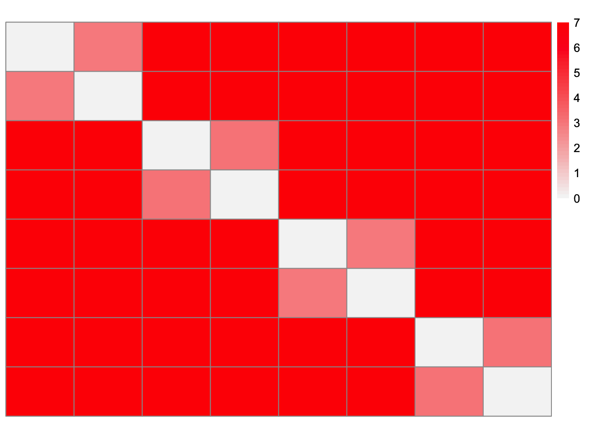

Last updated: 2024-08-07
Checks: 7 0
Knit directory:
drift_matrix_factorization/
This reproducible R Markdown analysis was created with workflowr (version 1.7.1). The Checks tab describes the reproducibility checks that were applied when the results were created. The Past versions tab lists the development history.
Great! Since the R Markdown file has been committed to the Git repository, you know the exact version of the code that produced these results.
Great job! The global environment was empty. Objects defined in the global environment can affect the analysis in your R Markdown file in unknown ways. For reproduciblity it’s best to always run the code in an empty environment.
The command set.seed(20240416) was run prior to running
the code in the R Markdown file. Setting a seed ensures that any results
that rely on randomness, e.g. subsampling or permutations, are
reproducible.
Great job! Recording the operating system, R version, and package versions is critical for reproducibility.
Nice! There were no cached chunks for this analysis, so you can be confident that you successfully produced the results during this run.
Great job! Using relative paths to the files within your workflowr project makes it easier to run your code on other machines.
Great! You are using Git for version control. Tracking code development and connecting the code version to the results is critical for reproducibility.
The results in this page were generated with repository version b516bce. See the Past versions tab to see a history of the changes made to the R Markdown and HTML files.
Note that you need to be careful to ensure that all relevant files for
the analysis have been committed to Git prior to generating the results
(you can use wflow_publish or
wflow_git_commit). workflowr only checks the R Markdown
file, but you know if there are other scripts or data files that it
depends on. Below is the status of the Git repository when the results
were generated:
Ignored files:
Ignored: .DS_Store
Ignored: .Rhistory
Note that any generated files, e.g. HTML, png, CSS, etc., are not included in this status report because it is ok for generated content to have uncommitted changes.
These are the previous versions of the repository in which changes were
made to the R Markdown (analysis/8-population-example.Rmd)
and HTML (docs/8-population-example.html) files. If you’ve
configured a remote Git repository (see ?wflow_git_remote),
click on the hyperlinks in the table below to view the files as they
were in that past version.
| File | Version | Author | Date | Message |
|---|---|---|---|---|
| Rmd | b516bce | Annie Xie | 2024-08-07 | Edit text |
| html | 22aaf9b | Annie Xie | 2024-08-05 | Build site. |
| Rmd | ba9b648 | Annie Xie | 2024-08-05 | Add examples with standardized loadings vectors |
In our previous analysis, we tested our distance-based regression method on 4 population data generated from a balanced tree. We wanted the method to recover a drift factorization. However, we found that the method was finding a different factorization. After further investigation, Matthew found an example where a different factorization provided a perfect fit (in the case of no noise) but its coefficients had a smaller L1 norm than the coefficients associated with the drift factorization. After finding this example, Matthew commented that we not only want our coefficients to be sparse, but we also want the chosen loadings vectors to also be sparse. In EBMF, this preference is directly encoded by placing a sparse prior on the loadings. However, it is unclear how to encode this preference in the regression setting. Matthew suggested trying to normalize the loadings vectors such that they have l1-norm equal to 1. This method is a little ad-hoc, but it seems like it should be able to capture the preference for sparse loadings vectors. Vectors that are not sparse will need higher coefficients due to the normalization of the vectors.
In this analysis, we want to test out this new method. We first test it out on the 4 population example. (Here, we consider no noise.) Then we will test out the method on a 8 population example where the data is generated from a balanced tree.
library(ggplot2)
library(pheatmap)
library(NNLM)plot_heatmap <- function(L, title = ""){
### define the color map
cols <- colorRampPalette(c("gray96", "red"))(49)
brks <- seq(min(L), max(L), length=50)
plt <- pheatmap(L, show_rownames = FALSE, show_colnames = FALSE, cluster_rows = FALSE, cluster_cols = FALSE, color = cols, breaks = brks, main = title)
return(plt)
}structure_plot_general = function(Lhat,Fhat,grouping,title=NULL, loadings_order = 'embed', print_plot=FALSE, seed=12345, n_samples = NULL, gap=40, show_legend=TRUE, K = NULL, plot.colors = NULL, normalize = FALSE){
set.seed(seed)
#if not told to plot all samples, then plot a sub-sample
if(is.null(n_samples)&all(loadings_order == "embed")){
n_samples = 2000
}
if(is.null(plot.colors)){
plot.colors <- rainbow(ncol(Lhat))
}
#normalize L such that each factor has a maximum loading value of 1
#results in an error if all the entries of a column are 0
# this doesn't do the normalization if all the entries are below 1 (think about!)
if (normalize == TRUE){
Lhat = apply(Lhat,2,function(z){z/max(max(z),0.00001)})
}
#if not told to plot all factors, then plot the requested subset
if(!is.null(K)){
Lhat = Lhat[,1:K]
Fhat = Fhat[,1:K]
}
Fhat = matrix(1,nrow=3,ncol=ncol(Lhat))
#add column names to Lhat if it doesn't have column names
if(is.null(colnames(Lhat))){
colnames(Lhat) <- paste0("k",1:ncol(Lhat))
}
#define multinom_topic_model_fit for structure plot function
fit_list <- list(L = Lhat,F = Fhat)
class(fit_list) <- c("multinom_topic_model_fit", "list")
#plot
p <- fastTopics::structure_plot(fit_list,grouping = grouping, loadings_order = loadings_order, n = n_samples, colors = plot.colors, gap = gap,verbose=F) + labs(y = "loading",color = "dim",fill = "dim") + ggtitle(title)
if(!show_legend){
p <- p + theme(legend.position="none")
}
if(print_plot){
print(p)
}
return(p)
}regression_obj_function <- function(y,x,beta,lambda){
obj_val <- mean((as.matrix(y, ncol = 1) - x%*%as.matrix(beta, ncol = 1))^2) + lambda*sum(abs(beta))
return(obj_val)
}obj_function_from_fit <- function(fit.regression, alpha_l1){
return(fit.regression$nnlm_fit$error[['MSE']] + alpha_l1*sum(abs(fit.regression$nnlm_fit$coefficients)))
}compute_distance <- function(X = NULL, crossprod_X = NULL){
#crossprod_X <- X %*% t(X) # assume X is samples by features
if (is.null(crossprod_X) == TRUE){
crossprod_X <- tcrossprod(X)
}
alpha <- diag(crossprod_X)
n <- length(alpha)
D <- as.matrix(alpha) %*% t(rep(1, n)) + as.matrix(rep(1,n)) %*% t(alpha) - 2*crossprod_X
return(D)
}compute_vector_distance_matrix <- function(l_k){
l_k_distance <- stats::dist(as.matrix(l_k), diag = FALSE) #this only outputs lower triangular part (not including diagonal)
return(l_k_distance)
}#small sample workflow
distance_matrix_factorization_standardized <- function(P = NULL, alpha_l1 = 0, dist_matrix = NULL, no_singleton = FALSE){
if (is.null(dist_matrix) == TRUE){
dist_matrix <- compute_distance(P)
n = nrow(P) # assume P is samples by features
print(n)
}
else{
n <- nrow(dist_matrix)
}
# get the options for the binary loadings vectors
L_options <- t(expand.grid(replicate(n, 0:1, simplify = FALSE)))
num_of_ones <- colSums(L_options)
L_options <- L_options[,(num_of_ones <= (n/2))]
#if n/2 is even
idx_halfn <- L_options[,(colSums(L_options) == (n/2))]
test_corr <- cor(idx_halfn, idx_halfn)
mytol <- 1e-10
test_complement <- (abs(test_corr - (-1)) < mytol)
complements <- which(test_complement, arr.ind = TRUE)
complements_keep <- complements[c(1:(nrow(complements)/2)), 2] #might need to change this
L_options <- cbind(L_options[,(colSums(L_options) < (n/2))], idx_halfn[,complements_keep])
# drop vector that is all zeros (the distance will be zero so it doesn't contribute in the regression model)
L_options <- L_options[, !(colSums(L_options) == 0)]
if (no_singleton == TRUE){
L_options <- L_options[, (colSums(L_options) != 1)]
}
# standardize the l vectors in the L_options matrix
L_options <- t(t(L_options)/colSums(L_options))
# Fit the regression
# I just fit off-diagonals since the diagonals of a distance matrix are zero
# I just fit the lower-triangular part since a distance matrix is symmetric
LLt_options <- matrix(rep(0, ncol(L_options)*(0.5*n*(n-1))), ncol = ncol(L_options))
for (i in 1:ncol(L_options)){
LLt_options[,i] <- c(compute_vector_distance_matrix(L_options[,i]))
}
D_lower <- lower.tri(dist_matrix, diag = FALSE)
D_lower_vec <- c(dist_matrix)[c(D_lower)]
nnlm_fit <- nnlm(LLt_options^2, as.matrix(D_lower_vec, ncol = 1), alpha = c(0,0,alpha_l1))
indices_keep <- (nnlm_fit$coefficients > 0)
lambda <- nnlm_fit$coefficients[indices_keep]
X_keep <- LLt_options[,indices_keep]
L_est <- L_options[,indices_keep] %*% diag(sqrt(lambda))
dist_est_vals <- LLt_options %*% nnlm_fit$coefficients
dist_est <- matrix(rep(0, n*n), ncol = n)
dist_est[lower.tri(dist_est,diag=FALSE)] <- dist_est_vals
dist_est <- as.matrix(Matrix::forceSymmetric(dist_est, uplo="L"))
return(list(nnlm_fit = nnlm_fit, lambda = lambda, L_unscaled = L_options[,indices_keep], L_est = L_est, dist_est = dist_est))
}#small sample workflow
distance_matrix_factorization <- function(P = NULL, alpha_l1 = 0, dist_matrix = NULL){
if (is.null(dist_matrix) == TRUE){
dist_matrix <- compute_distance(P)
n = nrow(P) # assume P is samples by features
print(n)
}
else{
n <- nrow(dist_matrix)
}
L_options <- t(expand.grid(replicate(n, 0:1, simplify = FALSE)))
num_of_ones <- colSums(L_options)
L_options <- L_options[,(num_of_ones <= (n/2))]
#if n/2 is even
idx_halfn <- L_options[,(colSums(L_options) == (n/2))]
test_corr <- cor(idx_halfn, idx_halfn)
mytol <- 1e-10
test_complement <- (abs(test_corr - (-1)) < mytol)
complements <- which(test_complement, arr.ind = TRUE)
complements_keep <- complements[c(1:(nrow(complements)/2)), 2] #might need to change this
L_options <- cbind(L_options[,(colSums(L_options) < (n/2))], idx_halfn[,complements_keep])
L_options <- L_options[,(colSums(L_options) != 0)]
#I just fit off-diagonals since the diagonals of a distance matrix are zero
#I just fit the lower-triangular part since a distance matrix is symmetric
LLt_options <- matrix(rep(0, (ncol(L_options)*(0.5*n*(n-1)))), ncol = ncol(L_options))
for (i in 1:ncol(L_options)){
LLt_options[,i] <- c(compute_vector_distance_matrix(L_options[,i]))
}
D_lower <- lower.tri(dist_matrix, diag = FALSE)
D_lower_vec <- c(dist_matrix)[c(D_lower)]
nnlm_fit <- nnlm(LLt_options, as.matrix(D_lower_vec, ncol = 1), alpha = c(0,0,alpha_l1))
indices_keep <- (nnlm_fit$coefficients > 0)
lambda <- nnlm_fit$coefficients[indices_keep]
X_keep <- LLt_options[,indices_keep]
L_est <- L_options[,indices_keep] %*% diag(sqrt(lambda)) # double check this
dist_est_vals <- LLt_options %*% nnlm_fit$coefficients
dist_est <- matrix(rep(0, n*n), ncol = n)
dist_est[lower.tri(dist_est,diag=FALSE)] <- dist_est_vals
dist_est <- as.matrix(Matrix::forceSymmetric(dist_est, uplo="L"))
return(list(nnlm_fit = nnlm_fit, L_est = L_est, dist_est = dist_est))
}In this example, we will test this method on 4 population data generated from a balanced tree with no noise.
# modified from Jason's code
sim_4pops_no_noise <- function(
seed = 666) {
set.seed(seed)
n <- 4
LL <- matrix(0, nrow = n, ncol = 7)
LL[, 1] <- 1
LL[, 2] <- c(1, 1, 0, 0)
LL[, 3] <- c(0, 0, 1, 1)
LL[, c(4:7)] <- diag(rep(1,n))
LLt <- tcrossprod(LL)
D2 <- compute_distance(crossprod_X = LLt)
return(list(D2 = D2, LL = LL))
}dist_data_4pop <- sim_4pops_no_noise()dist_data_4pop$D2 [,1] [,2] [,3] [,4]
[1,] 0 2 4 4
[2,] 2 0 4 4
[3,] 4 4 0 2
[4,] 4 4 2 0This is the split decomposition that we want the method to recover:
l1 <- stats::dist((1/2)*c(1, 1, 0, 0), diag = TRUE, upper = TRUE)
l2 <- stats::dist(c(1, 0, 0, 0), diag = TRUE, upper = TRUE)
l3 <- stats::dist(c(0, 1, 0, 0), diag = TRUE, upper = TRUE)
l4 <- stats::dist(c(0, 0, 1, 0), diag = TRUE, upper = TRUE)
l5 <- stats::dist(c(0, 0, 0, 1), diag = TRUE, upper = TRUE)8*l1^2 + l2^2 + l3^2 + l4^2 + l5^2 1 2 3 4
1 0 2 4 4
2 2 0 4 4
3 4 4 0 2
4 4 4 2 0The coefficients have l1 norm = 12.
Based off of the example that Matthew presented, I hypothesize that the new distance-based regression method (using standardized loadings vectors) will recover the drift factorization.
This is a heatmap of the distance matrix:
plot_heatmap(dist_data_4pop$D2)
| Version | Author | Date |
|---|---|---|
| 22aaf9b | Annie Xie | 2024-08-05 |
set.seed(2042)
fit.regression_4pop <- distance_matrix_factorization_standardized(dist_matrix = dist_data_4pop$D2, alpha_l1 = 10^(-10))Warning in nnlm(LLt_options^2, as.matrix(D_lower_vec, ncol = 1), alpha = c(0, :
x does not have a full column rank. Solution may not be unique.dist_est_4pop <- fit.regression_4pop$dist_estThis is a heatmap of the estimated distance matrix:
plot_heatmap(dist_est_4pop)
| Version | Author | Date |
|---|---|---|
| 22aaf9b | Annie Xie | 2024-08-05 |
This is a plot of the fitted values vs. observed values:
ggplot(data = NULL, aes(x = c(dist_data_4pop$D2), y = c(dist_est_4pop))) + geom_point() + geom_abline(intercept = 0, slope = 1, color = 'red') + xlab('Observed Values') + ylab('Fitted Values')
| Version | Author | Date |
|---|---|---|
| 22aaf9b | Annie Xie | 2024-08-05 |
This is a plot of the residuals:
fit.residuals_4pop <- c(dist_data_4pop$D2) - c(dist_est_4pop)
ggplot(data = NULL, aes(x = c(1:length(fit.residuals_4pop)), y = fit.residuals_4pop)) + geom_point() + geom_hline(yintercept = 0)
| Version | Author | Date |
|---|---|---|
| 22aaf9b | Annie Xie | 2024-08-05 |
This is a heatmap of the residuals:
plot_heatmap(dist_est_4pop - dist_data_4pop$D2)
| Version | Author | Date |
|---|---|---|
| 22aaf9b | Annie Xie | 2024-08-05 |
This is the MSE:
obj_function_from_fit(fit.regression_4pop, 0)[1] 1.000988e-20This is the objective function value:
obj_function_from_fit(fit.regression_4pop, 0.001)[1] 0.012dim(fit.regression_4pop$L_est)[1] 4 5This is a heatmap of the loadings:
plot_heatmap(fit.regression_4pop$L_est)
| Version | Author | Date |
|---|---|---|
| 22aaf9b | Annie Xie | 2024-08-05 |
This is a heatmap of the standardized loadings:
plot_heatmap(t(t(fit.regression_4pop$L_est)/apply(fit.regression_4pop$L_est,2, max)))
| Version | Author | Date |
|---|---|---|
| 22aaf9b | Annie Xie | 2024-08-05 |
This is a structure plot of the loadings:
structure_plot_general(fit.regression_4pop$L_est, fit.regression_4pop$L_est,
n_samples = 4,
plot.colors = rainbow(5), normalize = FALSE)
| Version | Author | Date |
|---|---|---|
| 22aaf9b | Annie Xie | 2024-08-05 |
This is a structure plot of the squared loadings:
structure_plot_general(fit.regression_4pop$L_est^2, fit.regression_4pop$L_est^2,
n_samples = 4,
plot.colors = rainbow(5), normalize = FALSE)
| Version | Author | Date |
|---|---|---|
| 22aaf9b | Annie Xie | 2024-08-05 |
The regression method was able to find the desired drift factorization. Four factors correspond to population-specific effects. The fifth factor corresponds to a shared effect for two of the populations, differentiating these two populations from the other two.
I also wanted to note that I tested different weights for the penalty term. I tried some very small weights, and the regression still returns 5 factors. These 5 factors still capture the same sources of variation.
In this example, we will test this method on 8 population data generated from a balanced tree.
# modified from Jason's code
sim_8pops_no_noise <- function(
seed = 666) {
set.seed(seed)
n <- 8
LL <- matrix(0, nrow = n, ncol = 15)
LL[, 1] <- 1
LL[, 2] <- c(1, 1, 1, 1, 0, 0, 0, 0)
LL[, 3] <- c(0, 0, 0, 0, 1, 1, 1, 1)
LL[, 4] <- c(1, 1, 0, 0, 0, 0, 0, 0)
LL[, 5] <- c(0, 0, 1, 1, 0, 0, 0, 0)
LL[, 6] <- c(0, 0, 0, 0, 1, 1, 0, 0)
LL[, 7] <- c(0, 0, 0, 0, 0, 0, 1, 1)
LL[, c(8:15)] <- diag(rep(1, 8))
LLt <- tcrossprod(LL)
D2 <- compute_distance(crossprod_X = LLt)
return(list(D2 = D2, LL = LL))
}dist_data_8pop <- sim_8pops_no_noise()dist_data_8pop$D2 [,1] [,2] [,3] [,4] [,5] [,6] [,7] [,8]
[1,] 0 2 4 4 6 6 6 6
[2,] 2 0 4 4 6 6 6 6
[3,] 4 4 0 2 6 6 6 6
[4,] 4 4 2 0 6 6 6 6
[5,] 6 6 6 6 0 2 4 4
[6,] 6 6 6 6 2 0 4 4
[7,] 6 6 6 6 4 4 0 2
[8,] 6 6 6 6 4 4 2 0This is the split decomposition we want.
l1 <- stats::dist((1/4)*c(1, 1, 1, 1, 0, 0, 0, 0), diag = TRUE, upper = TRUE)
l2 <- stats::dist((1/2)*c(1, 1, 0, 0, 0, 0, 0, 0), diag = TRUE, upper = TRUE)
l3 <- stats::dist((1/2)*c(0, 0, 1, 1, 0, 0, 0, 0), diag = TRUE, upper = TRUE)
l4 <- stats::dist((1/2)*c(0, 0, 0, 0, 1, 1, 0, 0), diag = TRUE, upper = TRUE)
l5 <- stats::dist((1/2)*c(0, 0, 0, 0, 0, 0, 1, 1), diag = TRUE, upper = TRUE)
l6 <- stats::dist(c(1, 0, 0, 0, 0, 0, 0, 0), diag = TRUE, upper = TRUE)
l7 <- stats::dist(c(0, 1, 0, 0, 0, 0, 0, 0), diag = TRUE, upper = TRUE)
l8 <- stats::dist(c(0, 0, 1, 0, 0, 0, 0, 0), diag = TRUE, upper = TRUE)
l9 <- stats::dist(c(0, 0, 0, 1, 0, 0, 0, 0), diag = TRUE, upper = TRUE)
l10 <- stats::dist(c(0, 0, 0, 0, 1, 0, 0, 0), diag = TRUE, upper = TRUE)
l11 <- stats::dist(c(0, 0, 0, 0, 0, 1, 0, 0), diag = TRUE, upper = TRUE)
l12 <- stats::dist(c(0, 0, 0, 0, 0, 0, 1, 0), diag = TRUE, upper = TRUE)
l13 <- stats::dist(c(0, 0, 0, 0, 0, 0, 0, 1), diag = TRUE, upper = TRUE)#l1 norm is 32+16+8 = 56
32*l1^2 + 4*l2^2 + 4*l3^2 + 4*l4^2 + 4*l5^2 + l6^2 + l7^2 + l8^2 + l9^2 + l10^2 + l11^2 + l12^2 + l13^2 1 2 3 4 5 6 7 8
1 0 2 4 4 6 6 6 6
2 2 0 4 4 6 6 6 6
3 4 4 0 2 6 6 6 6
4 4 4 2 0 6 6 6 6
5 6 6 6 6 0 2 4 4
6 6 6 6 6 2 0 4 4
7 6 6 6 6 4 4 0 2
8 6 6 6 6 4 4 2 0The coefficients of this decomposition have l1 norm = 56.
Based off of the 4 population example, I hypothesize that this method will also work for the 8 population data generated from the balanced tree. More specifically, I hypothesize that the regression method will recover the drift factorization.
This is a heatmap of the distance matrix:
plot_heatmap(dist_data_8pop$D2)
| Version | Author | Date |
|---|---|---|
| 22aaf9b | Annie Xie | 2024-08-05 |
set.seed(2042)
fit.regression_8pop <- distance_matrix_factorization_standardized(dist_matrix = dist_data_8pop$D2, alpha_l1 = 1)Warning in nnlm(LLt_options^2, as.matrix(D_lower_vec, ncol = 1), alpha = c(0, :
x does not have a full column rank. Solution may not be unique.dist_est_8pop <- fit.regression_8pop$dist_estThis is a heatmap of the estimated distance matrix:
plot_heatmap(dist_est_8pop)
| Version | Author | Date |
|---|---|---|
| 22aaf9b | Annie Xie | 2024-08-05 |
This is a plot of the fitted values vs. observed values:
ggplot(data = NULL, aes(x = c(dist_data_8pop$D2), y = c(dist_est_8pop))) + geom_point() + geom_abline(intercept = 0, slope = 1, color = 'red') + xlab('Observed Values') + ylab('Fitted Values')
| Version | Author | Date |
|---|---|---|
| 22aaf9b | Annie Xie | 2024-08-05 |
This is a plot of the residuals:
fit.residuals_8pop <- c(dist_est_8pop) - c(dist_data_8pop$D2)
ggplot(data = NULL, aes(x = c(1:length(fit.residuals_8pop)), y = fit.residuals_8pop)) + geom_point() + geom_hline(yintercept = 0)
| Version | Author | Date |
|---|---|---|
| 22aaf9b | Annie Xie | 2024-08-05 |
This is a heatmap of the residuals:
plot_heatmap(dist_est_8pop - dist_data_8pop$D2)
| Version | Author | Date |
|---|---|---|
| 22aaf9b | Annie Xie | 2024-08-05 |
This is the MSE:
obj_function_from_fit(fit.regression_8pop, 0)[1] 1This is the objective function value:
obj_function_from_fit(fit.regression_8pop, 1)[1] 29dim(fit.regression_8pop$L_est)[1] 8 16This is a heatmap of the loadings:
plot_heatmap(fit.regression_8pop$L_est)
| Version | Author | Date |
|---|---|---|
| 22aaf9b | Annie Xie | 2024-08-05 |
This is a heatmap of the standardized loadings:
plot_heatmap(t(t(fit.regression_8pop$L_est)/apply(fit.regression_8pop$L_est,2, max)))
| Version | Author | Date |
|---|---|---|
| 22aaf9b | Annie Xie | 2024-08-05 |
This is a structure plot of the loadings:
structure_plot_general(fit.regression_8pop$L_est, fit.regression_8pop$L_est,
n_samples = 8,
plot.colors = c('red','blue','green','yellow','orange','pink','purple','brown4','gray','skyblue','darkgreen','magenta','darkseagreen1', 'darkslategray', 'gold','navy'),
normalize = FALSE)
| Version | Author | Date |
|---|---|---|
| 22aaf9b | Annie Xie | 2024-08-05 |
This is a structure plot of the squared loadings:
structure_plot_general(fit.regression_8pop$L_est^2, fit.regression_8pop$L_est^2,
n_samples = 8,
plot.colors = c('red','blue','green','yellow','orange','pink','purple','brown4','gray','skyblue','darkgreen','magenta','darkseagreen1', 'darkslategray', 'gold','navy'),
normalize = FALSE)
| Version | Author | Date |
|---|---|---|
| 22aaf9b | Annie Xie | 2024-08-05 |
For the penalty weight = 1, the regression method with standardization returns 16 factors. 4 of these factors have small coefficient values and thus could potentially be fitting noise. Of the other 12 factors, 8 of them correspond to population specific effects. The other four factors correspond to the 2 vs 2 splits that occur for the nodes containing 4 populations each. These 12 factors are part of the drift factorization we were hoping to find. One factor from the drift factorization that is not recovered is the 4 vs 4 split.
The regression method with standardization does seem to choose sparser loadings vectors. I wonder if the method doesn’t find the 4 vs 4 split because it is not a sparser vector. The inclusion of the 4 vs 4 split improves the fit, but it also increases the l1 norm of the coefficients by a decent amount.
I wanted to also test the regression method without the singleton factors. In theory, the single population effects can be lumped in with noise. Therefore, I wanted to see if not including singleton factors changes the recovered factorization.
I hypothesize that the method will recover the desired 2 vs 6 factors – these factors were found even when singleton factors were considered. I hope that the method will recover the desired 4 vs 4 factor now that we are not considering the singleton factors. However, I’m not sure if this will be the case.
set.seed(2042)
fit.regression_8pop_nosingle <- distance_matrix_factorization_standardized(dist_matrix = dist_data_8pop$D2, alpha_l1 = 1, no_singleton = TRUE)Warning in nnlm(LLt_options^2, as.matrix(D_lower_vec, ncol = 1), alpha = c(0, :
x does not have a full column rank. Solution may not be unique.This is the MSE:
obj_function_from_fit(fit.regression_8pop_nosingle, 0)[1] 0.25This is the objective function value:
obj_function_from_fit(fit.regression_8pop_nosingle, 1)[1] 43.25dim(fit.regression_8pop_nosingle$L_est)[1] 8 12This is a heatmap of the loadings:
plot_heatmap(fit.regression_8pop_nosingle$L_est)
| Version | Author | Date |
|---|---|---|
| 22aaf9b | Annie Xie | 2024-08-05 |
This is a heatmap of the standardized loadings:
plot_heatmap(t(t(fit.regression_8pop_nosingle$L_est)/apply(fit.regression_8pop_nosingle$L_est,2, max)))
| Version | Author | Date |
|---|---|---|
| 22aaf9b | Annie Xie | 2024-08-05 |
This is a structure plot of the loadings:
structure_plot_general(fit.regression_8pop_nosingle$L_est, fit.regression_8pop_nosingle$L_est,
n_samples = 8,
plot.colors = c('red','blue','green','yellow','orange','pink','purple','brown4','gray','skyblue','darkgreen','magenta','darkseagreen1', 'darkslategray', 'gold','navy'),
normalize = FALSE)
| Version | Author | Date |
|---|---|---|
| 22aaf9b | Annie Xie | 2024-08-05 |
This is a structure plot of the squared loadings:
structure_plot_general(fit.regression_8pop_nosingle$L_est^2, fit.regression_8pop_nosingle$L_est^2,
n_samples = 8,
plot.colors = c('red','blue','green','yellow','orange','pink','purple','brown4','gray','skyblue','darkgreen','magenta','darkseagreen1', 'darkslategray', 'gold','navy'),
normalize = FALSE)
| Version | Author | Date |
|---|---|---|
| 22aaf9b | Annie Xie | 2024-08-05 |
The method was able to recover the desired 2 vs 6 factors. However, it did not recover the desired 4 vs 4 factor. Instead, it seems like the method used other 2 vs 6 factors to model the single population effects.
Here is a small example of this phenomenon in the 4 population case:
The split decomposition we want:
h1 <- stats::dist((1/2)*c(1, 1, 0, 0), diag = TRUE, upper = TRUE)
h2 <- stats::dist(c(1, 0, 0, 0), diag = TRUE, upper = TRUE)
h3 <- stats::dist(c(0, 1, 0, 0), diag = TRUE, upper = TRUE)
h4 <- stats::dist(c(0, 0, 1, 0), diag = TRUE, upper = TRUE)
h5 <- stats::dist(c(0, 0, 0, 1), diag = TRUE, upper = TRUE)8*h1^2 + h2^2 + h3^2 + h4^2 + h5^2 1 2 3 4
1 0 2 4 4
2 2 0 4 4
3 4 4 0 2
4 4 4 2 0An alternative split decomposition:
b1 <- stats::dist((1/2)*c(1,0,1,0), diag = TRUE, upper = TRUE)
b2 <- stats::dist((1/2)*c(0,1,1,0), diag = TRUE, upper = TRUE)
b3 <- stats::dist((1/2)*c(1,0,0,1), diag = TRUE, upper = TRUE)
b4 <- stats::dist((1/2)*c(0,1,0,1), diag = TRUE, upper = TRUE)12*h1^2 + (2)*(b1^2 + b2^2 + b3^2 + b4^2) 1 2 3 4
1 0 2 4 4
2 2 0 4 4
3 4 4 0 2
4 4 4 2 0For comparison, I wanted to apply the original regression method (without standardization) to the 8 population data and see what split metric decomposition it found. Based off of previous experience, I don’t expect this method to find the drift factorization. A few reasons why are 1) we do not encode a preference for sparser loadings vectors and 2) there likely is another decomposition whose coefficients have smaller l1 norm than those of the drift factorization.
set.seed(2042)
fit.regression <- distance_matrix_factorization(alpha_l1 = 32, dist_matrix = dist_data_8pop$D2)Warning in nnlm(LLt_options, as.matrix(D_lower_vec, ncol = 1), alpha = c(0, : x
does not have a full column rank. Solution may not be unique.This is the MSE:
obj_function_from_fit(fit.regression, 0)[1] 4This is the objective function value:
obj_function_from_fit(fit.regression, 32)[1] 164dim(fit.regression$L_est)[1] 8 15This is a heatmap of the loadings:
plot_heatmap(fit.regression$L_est)
| Version | Author | Date |
|---|---|---|
| 22aaf9b | Annie Xie | 2024-08-05 |
This is a heatmap of the standardized loadings:
plot_heatmap(t(t(fit.regression$L_est)/apply(fit.regression$L_est,2, max)))
| Version | Author | Date |
|---|---|---|
| 22aaf9b | Annie Xie | 2024-08-05 |
structure_plot_general(fit.regression$L_est^2, fit.regression$L_est^2,
n_samples = 8,
plot.colors = c('red','blue','green','yellow','orange','pink','purple','brown4','gray','skyblue','darkgreen','magenta','darkseagreen1', 'darkslategray', 'gold','navy'),
normalize = FALSE)
| Version | Author | Date |
|---|---|---|
| 22aaf9b | Annie Xie | 2024-08-05 |
As I hypothesized, the original regression method did not recover the drift factorization. For the penalty weight = 32, the method returned 15 factors. However, most of the factors have a very small coefficient and possibly are just fitting noise. There are three main factors that don’t have small coefficients. One of the factors corresponds to the first split of the tree, differentiating the first four populations from the latter four. The other two factors are also 4 vs. 4 splits. However, the splits do not align with the branches of the tree used to generate the data. This is similar to what we saw in the 4 population example.
In this example, I generate a population \(\times\) genes data set, \(Y\), with random normal noise. Then I compute the distance matrix using the Gram matrix, \(YY^{T}\). I was mainly curious to see if adding some noise leads to different results (compared to the previous example with no noise).
# modified from Jason's code
sim_8pops_with_noise <- function(indiv_sd, num_genes,
constrain_F = TRUE,
seed = 666) {
set.seed(seed)
n <- 8
p <- num_genes
branch_sds <- rep(1, 15)
LL <- matrix(0, nrow = n, ncol = 15)
LL[, 1] <- 1
LL[, 2] <- c(1, 1, 1, 1, 0, 0, 0, 0)
LL[, 3] <- c(0, 0, 0, 0, 1, 1, 1, 1)
LL[, 4] <- c(1, 1, 0, 0, 0, 0, 0, 0)
LL[, 5] <- c(0, 0, 1, 1, 0, 0, 0, 0)
LL[, 6] <- c(0, 0, 0, 0, 1, 1, 0, 0)
LL[, 7] <- c(0, 0, 0, 0, 0, 0, 1, 1)
LL[, c(8:15)] <- diag(rep(1, 8))
FF <- matrix(rnorm(15 * p, sd = rep(branch_sds, each = p)), ncol = 15)
if (constrain_F) {
FF_svd <- svd(FF)
FF <- FF_svd$u
FF <- t(t(FF) * branch_sds * sqrt(p))
}
E <- matrix(rnorm(n * p, sd = indiv_sd), nrow = n)
Y <- LL %*% t(FF) + E
YYt <- tcrossprod(Y)
D2 <- compute_distance(crossprod_X = YYt)
return(list(D2 = D2, Y = Y, LL = LL, FF = FF))
}dist_data_8pop_noise <- sim_8pops_with_noise(indiv_sd = 0.5, num_genes = 20)dist_data_8pop_noise$D2 [,1] [,2] [,3] [,4] [,5] [,6] [,7]
[1,] 0.00000 34.27869 94.55264 94.39914 135.83613 120.40316 120.96735
[2,] 34.27869 0.00000 96.83035 84.21821 147.77119 143.74758 136.44586
[3,] 94.55264 96.83035 0.00000 44.01988 140.93334 119.60892 112.21649
[4,] 94.39914 84.21821 44.01988 0.00000 155.17544 133.97381 111.41930
[5,] 135.83613 147.77119 140.93334 155.17544 0.00000 43.69335 110.89088
[6,] 120.40316 143.74758 119.60892 133.97381 43.69335 0.00000 84.25019
[7,] 120.96735 136.44586 112.21649 111.41930 110.89088 84.25019 0.00000
[8,] 136.40551 150.83729 128.69999 132.35899 110.59976 79.06088 54.76275
[,8]
[1,] 136.40551
[2,] 150.83729
[3,] 128.69999
[4,] 132.35899
[5,] 110.59976
[6,] 79.06088
[7,] 54.76275
[8,] 0.00000I hypothesize that the decomposition found is similar to that found in the previous example with no noise.
This is a heatmap of the distance matrix:
plot_heatmap(dist_data_8pop_noise$D2)
| Version | Author | Date |
|---|---|---|
| 22aaf9b | Annie Xie | 2024-08-05 |
set.seed(2042)
fit.regression_8pop_noise <- distance_matrix_factorization_standardized(dist_matrix = dist_data_8pop_noise$D2, alpha_l1 = 31)Warning in nnlm(LLt_options^2, as.matrix(D_lower_vec, ncol = 1), alpha = c(0, :
x does not have a full column rank. Solution may not be unique.dist_est_8pop_noise <- fit.regression_8pop_noise$dist_estThis is a heatmap of the estimated distance matrix:
plot_heatmap(dist_est_8pop_noise)
| Version | Author | Date |
|---|---|---|
| 22aaf9b | Annie Xie | 2024-08-05 |
This is a plot of the fitted values vs. observed values:
ggplot(data = NULL, aes(x = c(dist_data_8pop_noise$D2), y = c(dist_est_8pop_noise))) + geom_point() + geom_abline(intercept = 0, slope = 1, color = 'red') + xlab('Observed Values') + ylab('Fitted Values')
| Version | Author | Date |
|---|---|---|
| 22aaf9b | Annie Xie | 2024-08-05 |
This is a plot of the residuals:
fit.residuals_8pop_noise <- c(dist_data_8pop_noise$D2) - c(dist_est_8pop_noise)
ggplot(data = NULL, aes(x = c(1:length(fit.residuals_8pop_noise)), y = fit.residuals_8pop_noise)) + geom_point() + geom_hline(yintercept = 0)
| Version | Author | Date |
|---|---|---|
| 22aaf9b | Annie Xie | 2024-08-05 |
This is a heatmap of the residuals:
plot_heatmap(dist_data_8pop_noise$D2 - dist_est_8pop_noise)
| Version | Author | Date |
|---|---|---|
| 22aaf9b | Annie Xie | 2024-08-05 |
This is the MSE:
obj_function_from_fit(fit.regression_8pop_noise, 0)[1] 557.5629This is the objective function value:
obj_function_from_fit(fit.regression_8pop_noise, 20)[1] 12099.82dim(fit.regression_8pop_noise$L_est)[1] 8 12This is a heatmap of the loadings:
plot_heatmap(fit.regression_8pop_noise$L_est)
| Version | Author | Date |
|---|---|---|
| 22aaf9b | Annie Xie | 2024-08-05 |
This is a heatmap of the standardized loadings:
plot_heatmap(t(t(fit.regression_8pop_noise$L_est)/apply(fit.regression_8pop_noise$L_est,2, max)))
| Version | Author | Date |
|---|---|---|
| 22aaf9b | Annie Xie | 2024-08-05 |
This is a structure plot of the loadings:
structure_plot_general(fit.regression_8pop_noise$L_est, fit.regression_8pop_noise$L_est,
n_samples = 8,
plot.colors = c('red','blue','green','yellow','orange','pink','purple','brown4','gray','skyblue','darkgreen','magenta'), normalize = FALSE)
| Version | Author | Date |
|---|---|---|
| 22aaf9b | Annie Xie | 2024-08-05 |
This is a structure plot of the squared loadings:
structure_plot_general(fit.regression_8pop_noise$L_est^2, fit.regression_8pop_noise$L_est^2,
n_samples = 8,
plot.colors = c('red','blue','green','yellow','orange','pink','purple','brown4','gray','skyblue','darkgreen','magenta'), normalize = FALSE)
| Version | Author | Date |
|---|---|---|
| 22aaf9b | Annie Xie | 2024-08-05 |
The decomposition found is similar to that found in the no noise example. We find 8 population specific factors. We also find the four 2 vs 2 factors that split the nodes containing 4 populations.
sessionInfo()R version 4.3.2 (2023-10-31)
Platform: aarch64-apple-darwin20 (64-bit)
Running under: macOS Sonoma 14.4.1
Matrix products: default
BLAS: /Library/Frameworks/R.framework/Versions/4.3-arm64/Resources/lib/libRblas.0.dylib
LAPACK: /Library/Frameworks/R.framework/Versions/4.3-arm64/Resources/lib/libRlapack.dylib; LAPACK version 3.11.0
locale:
[1] en_US.UTF-8/en_US.UTF-8/en_US.UTF-8/C/en_US.UTF-8/en_US.UTF-8
time zone: America/Chicago
tzcode source: internal
attached base packages:
[1] stats graphics grDevices utils datasets methods base
other attached packages:
[1] NNLM_0.4.4 pheatmap_1.0.12 ggplot2_3.5.1 workflowr_1.7.1
loaded via a namespace (and not attached):
[1] tidyselect_1.2.1 viridisLite_0.4.2 dplyr_1.1.4 farver_2.1.2
[5] fastmap_1.2.0 lazyeval_0.2.2 promises_1.3.0 digest_0.6.35
[9] lifecycle_1.0.4 survival_3.6-4 processx_3.8.4 invgamma_1.1
[13] magrittr_2.0.3 compiler_4.3.2 rlang_1.1.3 sass_0.4.9
[17] progress_1.2.3 tools_4.3.2 utf8_1.2.4 yaml_2.3.8
[21] data.table_1.15.4 knitr_1.45 prettyunits_1.2.0 labeling_0.4.3
[25] htmlwidgets_1.6.4 RColorBrewer_1.1-3 Rtsne_0.17 withr_3.0.0
[29] purrr_1.0.2 grid_4.3.2 fansi_1.0.6 git2r_0.33.0
[33] fastTopics_0.6-142 colorspace_2.1-0 scales_1.3.0 MASS_7.3-60.0.1
[37] mcmc_0.9-8 cli_3.6.2 crayon_1.5.2 rmarkdown_2.27
[41] generics_0.1.3 RcppParallel_5.1.7 rstudioapi_0.16.0 httr_1.4.7
[45] pbapply_1.7-2 cachem_1.1.0 stringr_1.5.1 splines_4.3.2
[49] parallel_4.3.2 vctrs_0.6.5 Matrix_1.6-5 jsonlite_1.8.8
[53] SparseM_1.81 callr_3.7.6 hms_1.1.3 MCMCpack_1.7-0
[57] mixsqp_0.3-54 ggrepel_0.9.5 irlba_2.3.5.1 plotly_4.10.4
[61] jquerylib_0.1.4 tidyr_1.3.1 glue_1.7.0 ps_1.7.6
[65] uwot_0.1.16 cowplot_1.1.3 stringi_1.8.4 gtable_0.3.5
[69] later_1.3.2 quadprog_1.5-8 munsell_0.5.1 tibble_3.2.1
[73] pillar_1.9.0 htmltools_0.5.8.1 quantreg_5.97 truncnorm_1.0-9
[77] R6_2.5.1 rprojroot_2.0.4 evaluate_0.23 lattice_0.22-6
[81] highr_0.11 SQUAREM_2021.1 ashr_2.2-66 httpuv_1.6.15
[85] bslib_0.7.0 MatrixModels_0.5-3 Rcpp_1.0.12 coda_0.19-4.1
[89] whisker_0.4.1 xfun_0.44 fs_1.6.4 getPass_0.2-4
[93] pkgconfig_2.0.3